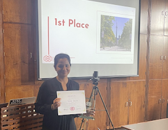
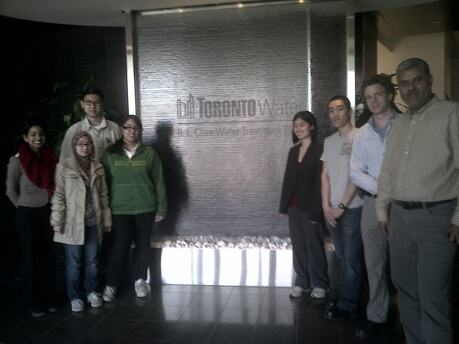

|
Chem Week
Every year, CSChE organizes a week packed full of events called Chem Week. This week is dedicated to celebrating the chemical engineering community, balancing social programming with academic and professional development-focused events. Events include the Graduate-Undergraduate Student Mixer, which provides undergraduates with the opportunity to learn about graduate school and research opportunities, and the Troost Cup, a leadership and community building event sponsored by the Troost family (the current owners of Peel Plastics). |
 |
|
Candy Grams
Every year during Valentine’s Day, it is tradition for CSChE to make and sell candy grams to the chemical engineering community. We run this initiative to bring the student body together with some light-hearted chemical engineering puns and a side of sweets. |
 |
|
Sector Info Night
Each year we invite alumni from the Chemical Engineering Department to speak with current undergraduates about their careers and how studying chemical engineering at U of T has helped them in their professional endeavours. Companies represented include Hatch, KPMG, AtkinsRealis, Li-Cycle, and McKinsey & Company. |

|